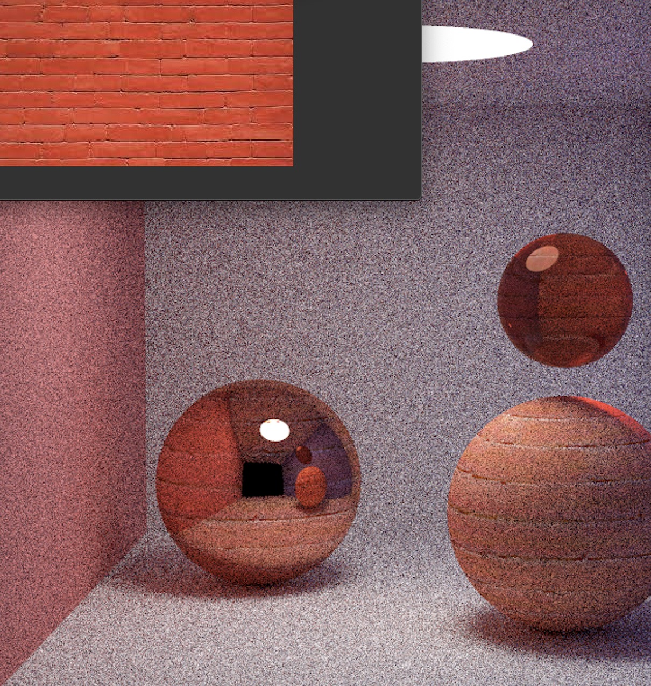
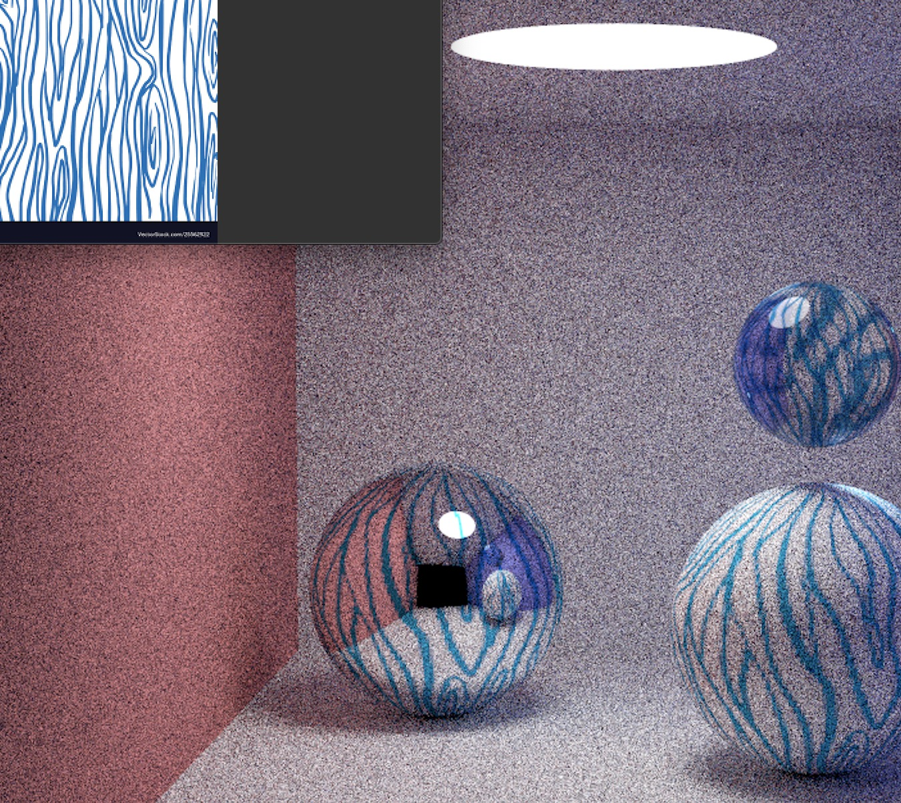
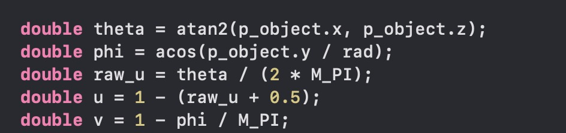
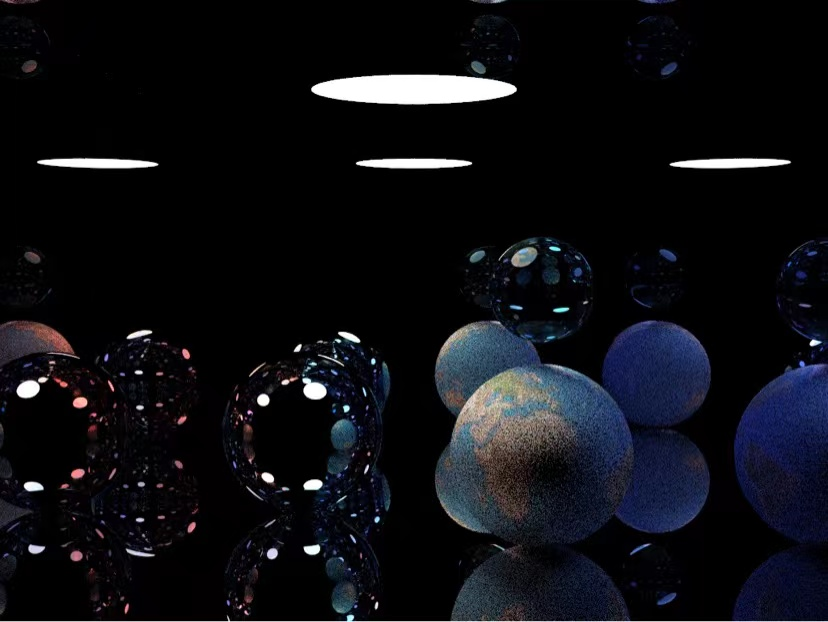

Brief summarize
In project 3, we implemented a physically-based renderer that could render various objects based on ray tracing. We were fascinated by the output images that the pathtracer produces, and decided to further improve its performance. We noticed that the renderer doesn’t have texture support. Luckily, we learned about the basic algorithm of texture rendering in class. Therefore, we reached at this final project topic - rendering with texture support. We studied the codebase for project 3 and tried to add a texture model into the codebase. We find this difficult to start with, so we learn to write a simplified version of ray tracer process with far less options. We collected learning materials to do texture mapping for regular shape objects such as sphere and cube. By now, we just have spheres in different colors.
Technical Approach
These are some of the final images that we were able to produce by our modified path tracer. On the upper left corner is the image texture we gave to the spheres inside the box.
 Our basic idea is that when light intersects with object which we want to render with texture, the algorithm will return the corresponding values of the texture at that point of intersection instead of the original color. For sphere, we only need to find a continuous function that maps 3-dimensional coordinates to 2-dimensional texture uv-coordinates. Specifically, for every intersection, we map the 3d (x,y,z) position of the sphere to 2d uv coordinate of the texture and return the corresponding texture value at that uv coordinate.
Checker-like texture


|
|
|
|
|
|
In our final results, we built a hard-coded scene, in which we have a very very big sphere in the bottom whose center is very far away so that it looks like a plane when we place our camera on top of it. We use this same idea to create the other walls of the scene. Between the “plane” spheres, we placed several small spheres and we have our light source on the top. To render the image in the slide, we mapped a earth texture image to the small sphere inside and changed all surrounding material types to mirror.
Link to video introduction: https://drive.google.com/file/d/1XD1nSMe9jZD28l4in3Hp7XE0GUGIJufi/view?usp=sharing
Resources
http://www.cs.toronto.edu/~kyros/courses/418/Lectures/lecture.2010f.07.pdf
http://graphics.ucsd.edu/~henrik/papers/practical_microcylinder_appearance_model_for_cloth_rendering.pdf
Contributions from each team member
Jingqi Huang, Charlotte Mei and Ryan Solan all contributed to the base algorithm of the renderer, Apart from that, Jingqi worked to produce the checker-like texture; Ryan modified the renderer to produce the final images; Charlotte made the slides and websites for the milestones and presentation.